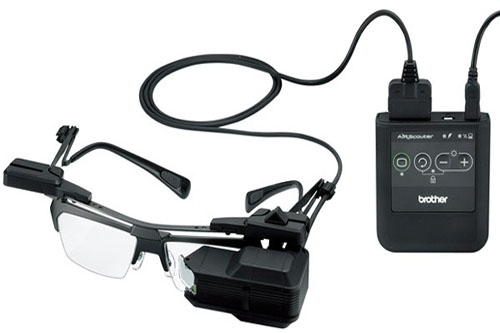

In the projects CSense and CoSense, we focused on the sharing of emotional states with the remote person in order to augment empathy in both. There are many examples of how remote collaboration may help a person to perform the real world tasks more efficiently. For example, a surgeon performing an operation in an absense of a specialist surgeon, so what if the technology could be used to allow the specialist to participate remotely and instruct the operating room staff and surgeon in order to complete the task successfully. However, participating remotely is not the same as being there in person. In particular, it may be difficult for a remote person to know the exact focus of attention of the local worker (the person performing the actions). Now imagine if the specialist knows the exact focus of attention of the operating staff, he could have been more specific with the instructions and felt more conected and co-present.
The goal of our research project Gaze-Sense is to explore if sharing the focus of attention using eye-tracking information of a local worker can help in feeling the remote instructor (helper) more connected and co-present in a remote assistance scenario.
The research questions for this research project are:
For this system, the main components are:
We made a rough block diagram for the whole idea.
For HMD, we chose Brother AirScouter, a high quality, optical see-through monocular 800 x 600 resolution display with a field of view of 22.4 degrees. In order to align the display with the user's sight line, it has an adjustable mounting mechanism.
We developed a custom made eye tracker using Microsoft Lifecam HD 5000 and custom 3D printed enclosure pointing at user's eye. Now to superimpose eye gaze information on the POV real world, we used Logitech webcam C920 on the system facing outwards as the HWC.

In the software part, there were two main components. First was the eye tracking application that was tracking the eye pupil and overlaying the gaze information as a marker on the real world video feed captured from HWC. We modified the open source eye tracking software developed at Pupil Labs that uses computer vision to track eye pupil at 30 frames per second and map it over the video from HWC. The second was the annotation application that allowed the remote helper to move a mouse pointer over the remote video view of the local worker and shows the result in the display of the HMD. It was a screen cast of remote desktop over the local worker's HMD along with the mouse pointer annotation developed in .NET language.
A 2 by 2 Experiment was designed to validate the hypothesis. In the experiment, we used a remote assistance scenario where a local worker will be given a task and the remote helper who will have experience of performing the task will be assisting the local worker. For the tasks we designed 4 LEGO duplo structures with equal pieces and equal difficulty level. The local worker had to follow remote helper's instruction and perform the task. There was a time that had to be reset before it reaches 0 seconds in order to provide multiple focus points at a time that could relate to an operation theatre scenario.
For the experiment, the conditions that we had were:
The results from the experiment can be seen in the Master's thesis available in the University of Canterbury's online repository.
Project Supervisor: Dr. Christoph Bartneck Project Co-Supervisor: Prof. Mark Billinghurst and Dr. Gun Lee
Portfolio